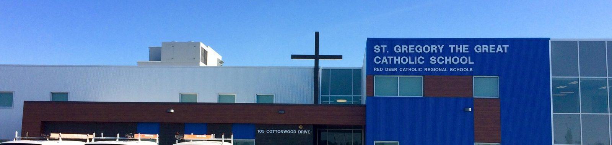
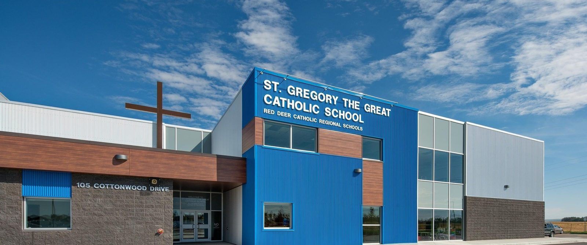

St. Gregory the Great is a new K-9 school constructed using a full Integrated Project Delivery approach — a modified version of the Design-Build methodology, executed with a highly collaborative team of contractors, design consultants, and Owner representatives.
The facility accommodates up to 500 students and began accepting students in August 2017. The project utilised all of the key elements common to IPD: Big Room dynamics, lean-oriented methods and means, and use of technology to enhance the BIM philosophy — working as a team in the truest sense.
The St. Gregory project team had the advantage of largely completing the St. Joseph High School IPD project beforehand, allowing for direct implementation of lessons learned and an established culture familiar with each other.

MCW served as Mechanical Engineer under the IPD agreement, continuing the team relationships established on St. Joseph High School and applying lessons learned from that earlier delivery.
Continuity compounds. Because much of the team had worked together on St. Joseph High School, St. Gregory benefited from established trust, shared vocabulary, and direct application of lessons learned. The result was visible in tighter execution from design through construction.
Our experience identified that attention to detail and high levels of engagement during the design phase paid many dividends during the construction phase in the way traditional contract administration duties were executed. The level of confidence shown by the mechanical contractor — due to their involvement in the design phase — was realised as construction proceeded with innovation and alternate strategies developing on a constant basis.
The design team supported this through continual updates of the model and delivering as-constructed documents largely in real time. The project achieved LEED Silver because of the team's commitment to producing an excellent product with significant long-term benefits for the Owner.